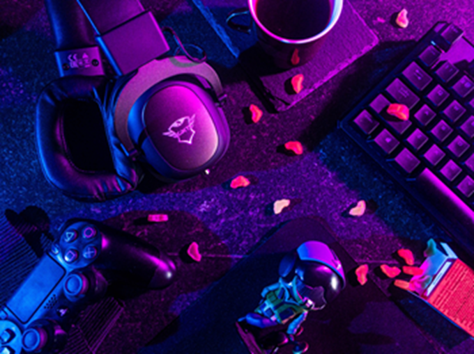

Gaming
Le gaming, un de mes univers préféré ! Derrière les différentes mécaniques de jeu qu'offre chaque jeu de façon se cachent souvent des histoires uniques, des personnages mémorables, des musiques qui touchent et mêmes de nouvelles relations sociales.
Il existe tellement de genres de jeux vidéo aujourd'hui que chacun peut y trouver son compte. Même si vous n'aimez pas les jeux vidéo en général mais que vous adorez les histoires fortes ou même créer votre propre histoire, vous trouverez votre place dans le monde du gaming.
Pour ma part, j'aime particulièrement les jeux de combat et de tir à cause de l'intensité de précision, de stratégie, de rapidité, de réflexion, d'adaptation et de travail d'équipe pour les jeux de tir particulièrement, tout ça à la fois. C'est comme un sport mental, ce qui existe d'ailleurs officiellement sous le nom de "eSport".
